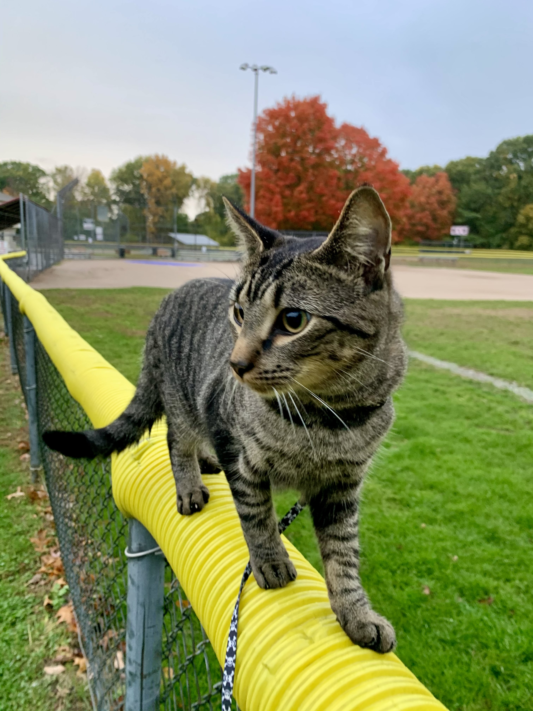
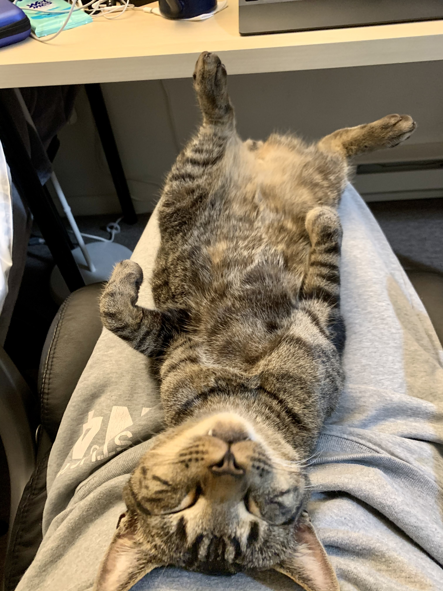
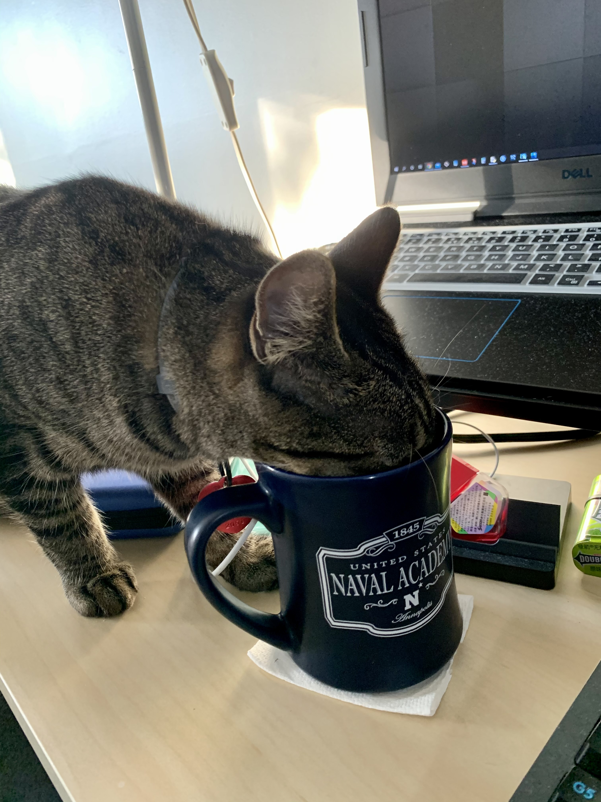
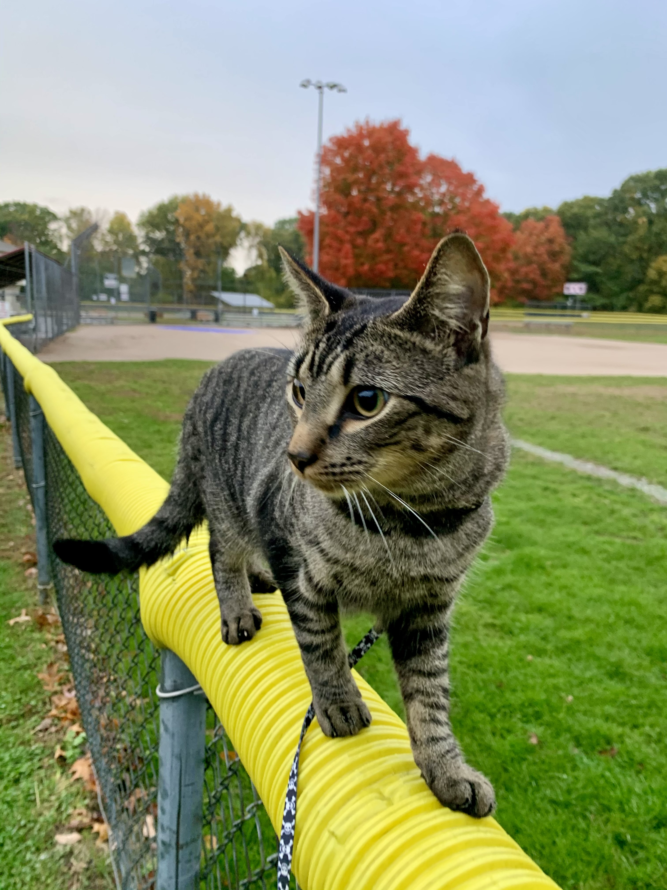
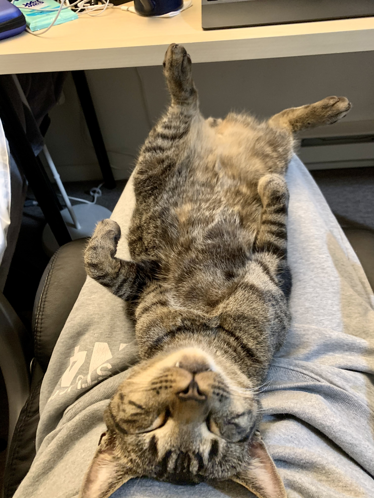
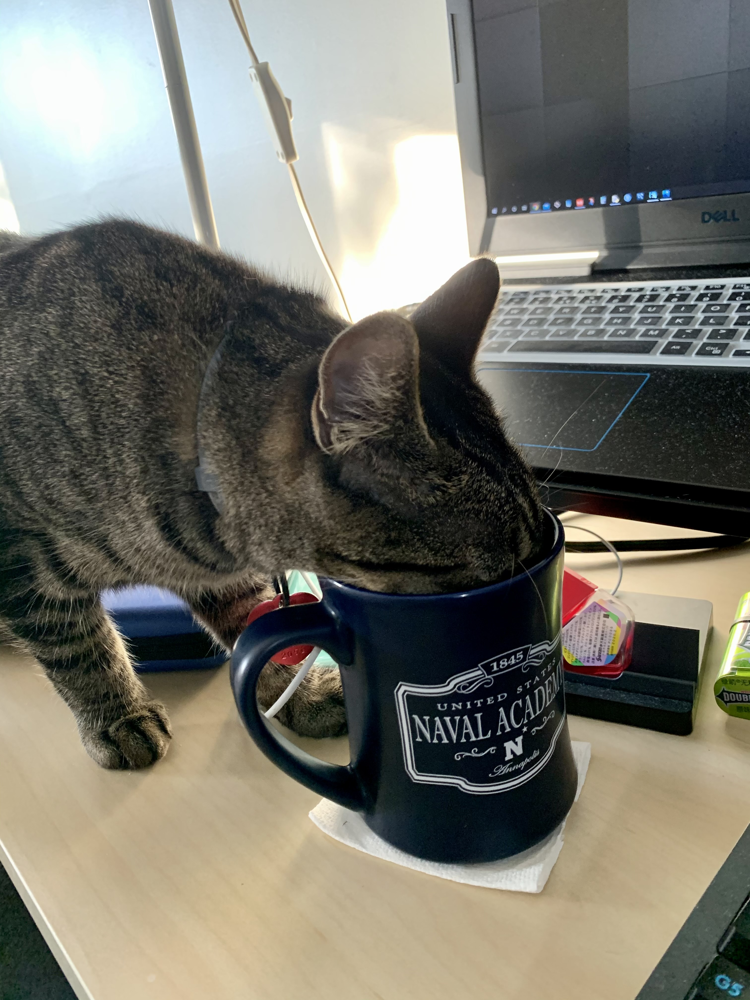

We are a Group of Cat Caring Individuals
Fort Worth Pet Adoption Service is an organization formed by a group of veterinarians and caring individuals dedicated to helping homeless and unwanted cats in Fort Worth and the surrounding area.
We depends on a core group of volunteers to foster and rehabilitate animals in their homes. This provides us with the opportunity to learn first hand about the animal’s needs and behavior in order to facilitate an appropriate adoption.
We were incorporated in 2006 and has re-homed more than 19,000 animals. The majority of the animals we help originate from high kill shelters. We make weekly trips to area shelters to remove animals whose “time is up”. Some these animals suffer from heartworm infection, fractures, mange, neglect, and have been used to breed year after year.
 




